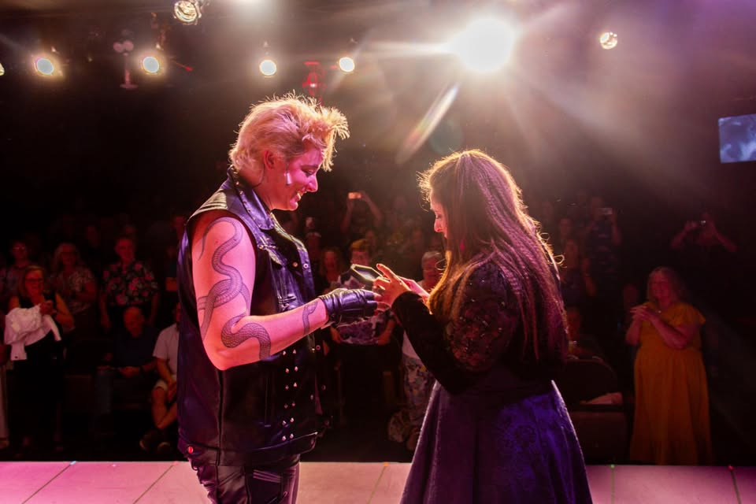

The Wedding Singer: A Hartfelt Hit at The Village Players Theatre
1985 was chock-full of totally rad pop culture events: Marty McFly traveled Back to the Future and The Breakfast Club were in detention, Live Aid delivered timeless performances seen around the world, future heavyweight champion boxer Mike Tyson made his professional debut, and yours truly was born (best for last and all).
It also happens to be the year in which The Wedding Singer Musical was set, which just ended its two-week run at The Village Players Theatre in Toledo. It's based on the 1998 Adam Sandler film of the same name.
If you weren't around in the late 90s or you somehow otherwise missed it in its original release, The Wedding Singer follows Robbie Hart (played by Brian Matson in this production), a failed rock star turned popular wedding singer who finds himself depressed after a broken engagement. When he befriends Julia (Cassidy Anderson), a kindhearted waitress planning her own wedding, an unexpected romance takes shape. Along the way, we get introduced to a slew of other characters including fellow wedding band members Sammy (Seth Johnson) and George (Jacob Smith), Julia's cousin and best friend Holly (Samantha Kirsch), and Robbie's sweet old grandmother Rosie (Kenya Taylor).
Up until recently, I was only familiar with the Sandler rendition and had no prior knowledge that the musical existed. Being a longtime fan of the movie and the father of a daughter with a severe musical theater addiction, it seemed like an ideal show to check out. We attended the final performance that took place on Father's Day, and I'm so incredibly glad that we did. The cast and crew did an excellent job bringing the story to life and packed a ton of production value into the show. One of their most impressive achievements was fitting a full live band on stage for the entire performance. The musicians delivered the score flawlessly, and the soundtrack itself is a no-skip listening experience for fans of musical theater and '80s-style music.
I was pleasantly surprised to learn that "Somebody Kill Me" and "Growing Old with You," memorable songs from the film, were included in the show's soundtrack, in addition to a lengthy list of original songs. Something that I appreciated about this production was how effectively it utilized its ensemble cast; they were on stage for most of the show (complete with numerous costume changes) and delivered memorable spotlight performances instead of simply fading into the background. Two ensemble performers who particularly stood out to me were Chris Preston and Dannie Ellis, both of whom delivered memorable performances in multiple roles throughout the evening. It never ceases to amaze me the level of talent that we have in Toledo when it comes to live theater performances, and this was no exception as this cast delivered the kind of singing and choreography you'd expect from a much larger production.
It's also worth mentioning that if you've never been to The Village Players Theatre, I highly recommend catching a performance ASAP. It's a great little 165-seat theater packed with tons of charm and character that first opened its doors nearly 70 years ago, and is staffed by a group of knowledgeable and passionate volunteers. Their concession stand is criminally underpriced, so be sure to support the venue and grab some refreshments before you head to your seat. You can walk away with a couple of waters and a bag of candy for less than $5, which is something you won't find elsewhere. Last I checked, they didn't have any "New Coke" available (Bogus, I know).

Something really memorable occurred at the last Saturday night performance when cast member Lee Nutter proposed to fellow cast member Samantha Kirsch on stage at the closing of the show. After saying yes, the entire cast very fittingly sang several bars of "Pop!", which is a song from the show about marriage proposals. Samantha happens to be a former coworker and friend of mine, so seeing video of the proposal on social media made for an especially touching moment and felt right at home in a musical built around weddings and true love.
Tickets for The Village Players Theatre's next production, 'night Mother, which runs July 10th-12th, are available on their website. They’ve also just announced their opening musical for their upcoming 69th season, Come From Away.